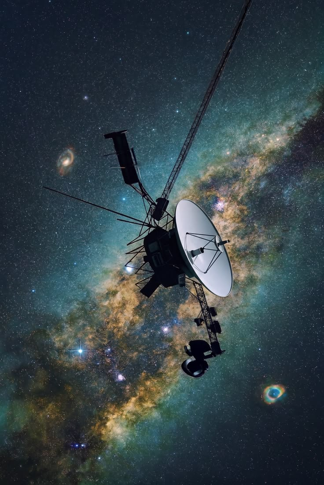
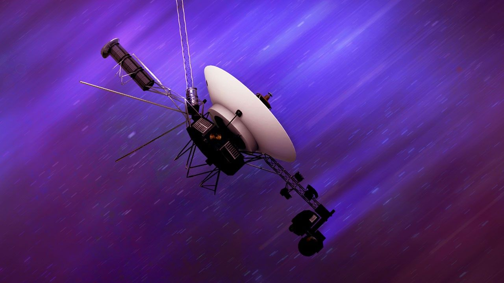
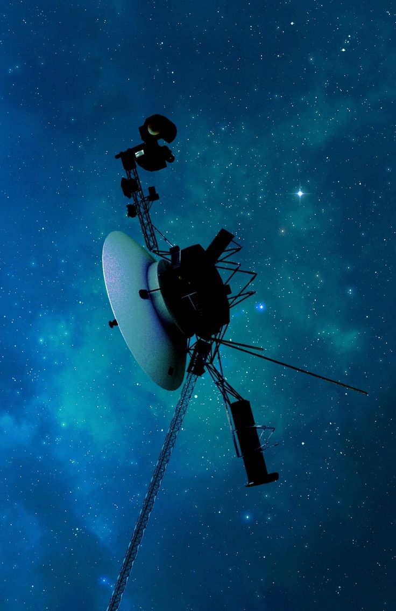
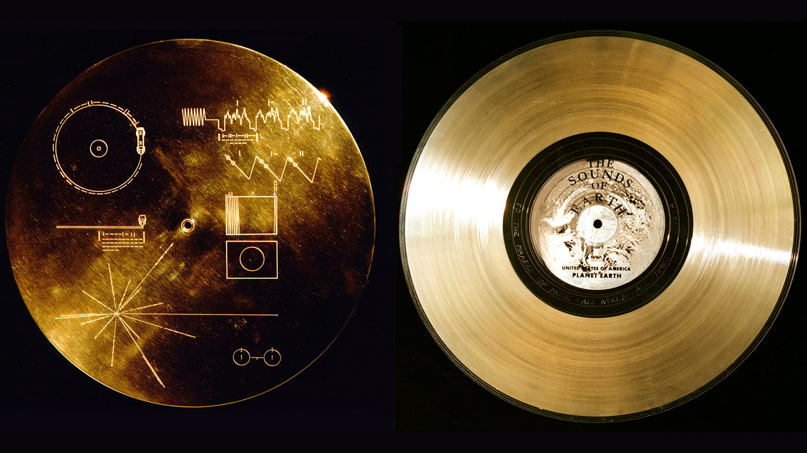
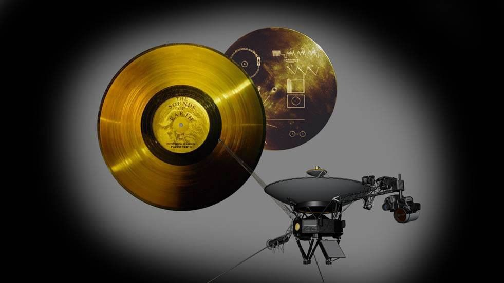
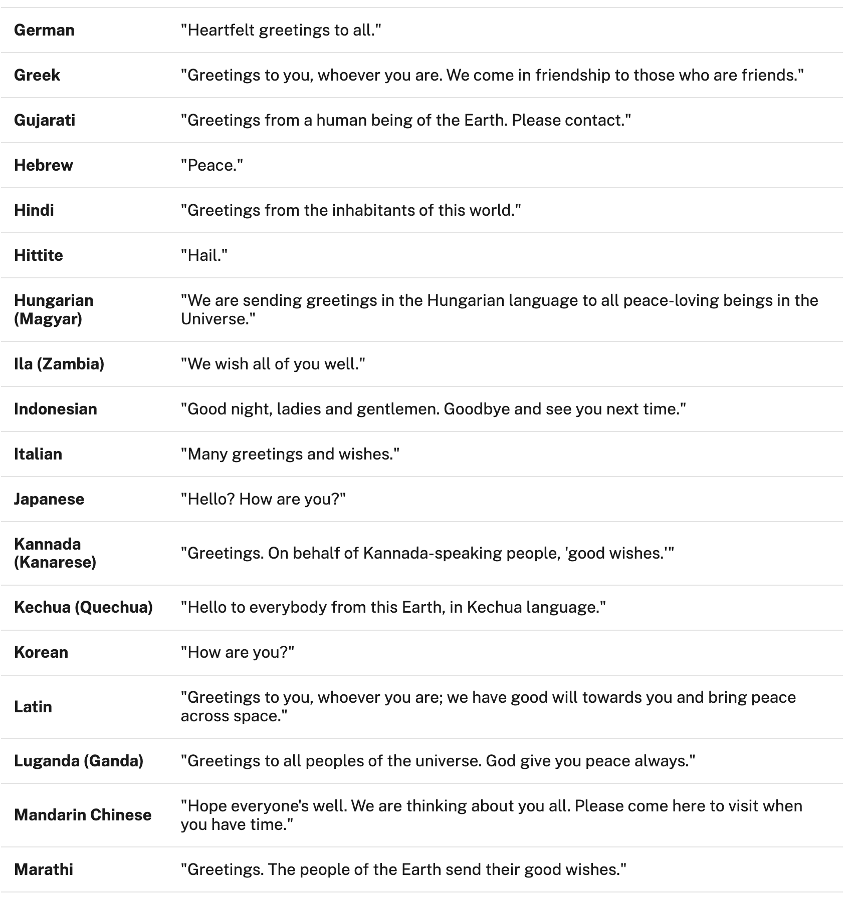
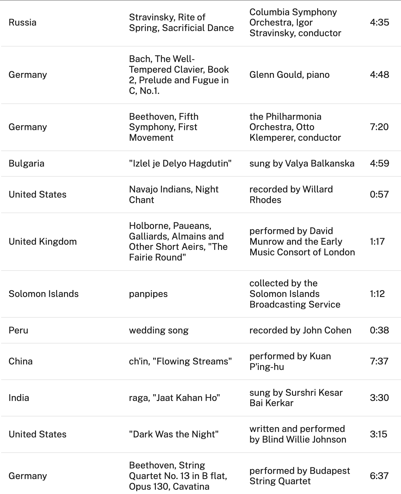
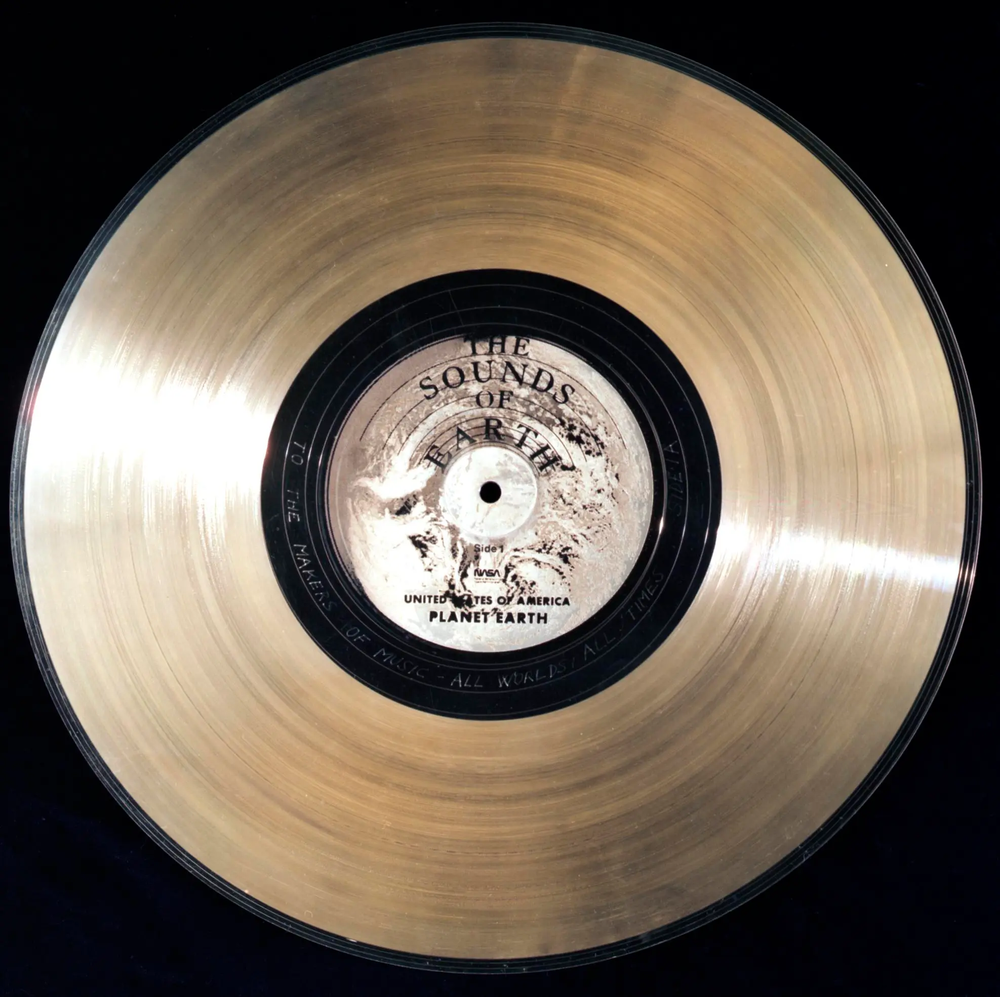
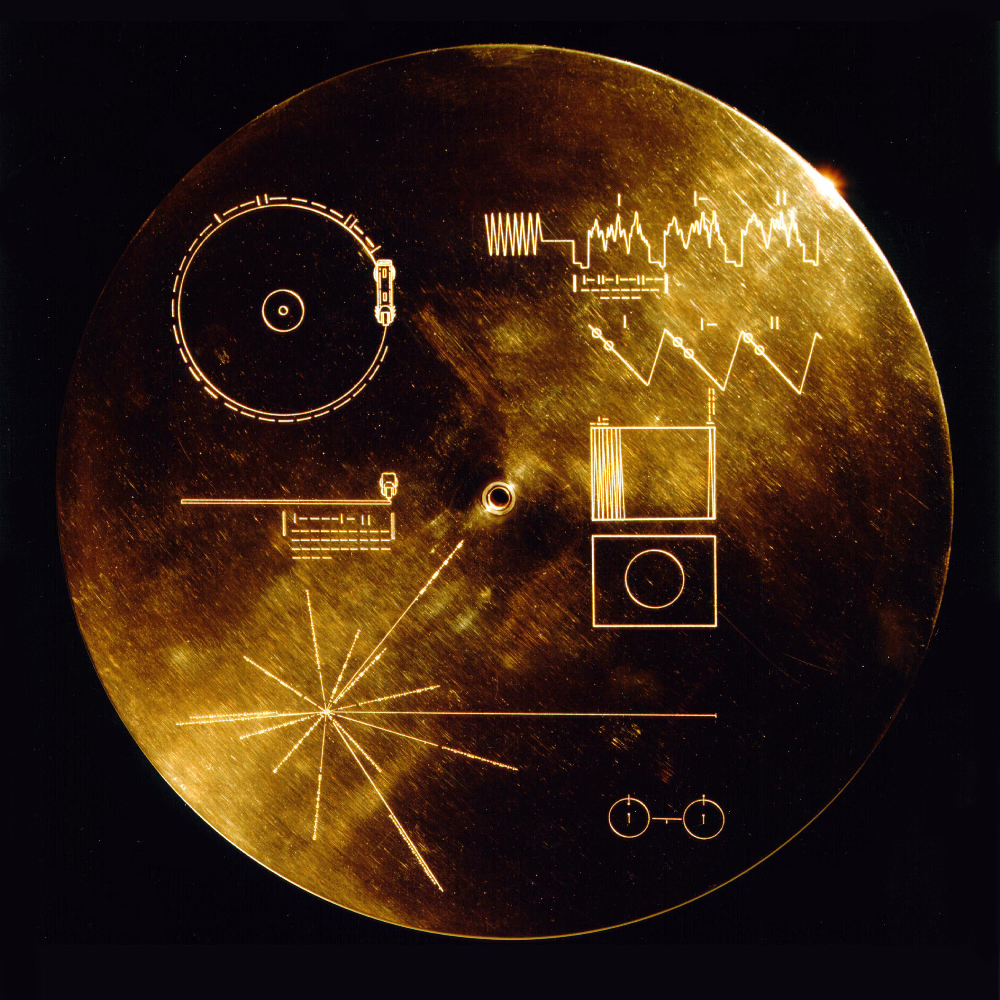
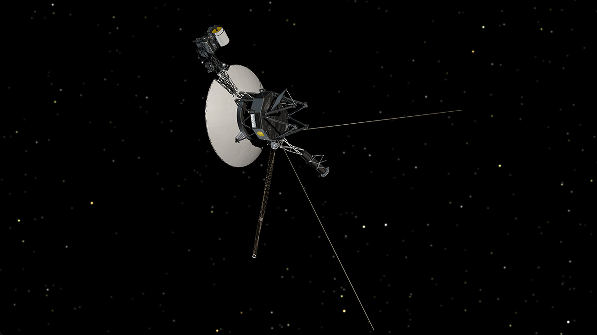

Voyager 1
- Launch
- September 5, 1977
- Mission
- Interstellar exploration
- Interstellar space
- August 2012
- One light-day
- November 18, 2026about 24 hours one-way by radio
- Heading
- Still travelling away from Earth

Voyager 1 & Voyager 2
On a distant summer in 1977, humanity sent two machines towards the unknown. They are still travelling. And they are still carrying a little piece of Earth.
Launched in 1977. Still travelling through interstellar space.
Voyager 1 and 2 were designed to explore the outer planets, using each planet’s gravity to slingshot onward. Voyager 2 went on to Uranus and Neptune. When the planets were behind them, the mission became something larger: to learn what lies at the edge of the Sun’s influence, and beyond.


Voyager 2 launched first, sixteen days before Voyager 1. But Voyager 1 took a faster path, and it is the more distant of the two.
Hover over a milestone to see its photograph, or tap it on a phone. Hollow markers are projections, not events. Voyager 2 is on the left, Voyager 1 on the right.
February 14, 1990 · about 6 billion kilometres from home
On February 14, 1990, Voyager 1 looked back towards Earth from approximately 6 billion kilometres away.
In the photograph, our entire world is visible as a tiny speck of light, less than a single pixel across.
It is one of the most powerful photographs ever taken. That speck contained every human being who had ever lived, every civilisation, every war, every love story, every achievement, every memory, and every unfinished dream.
All of it, inside that tiny dot.
Somewhere inside that little pixel, there were people looking at the sky, wondering whether something else existed beyond it. They never imagined that a machine they had built would one day look back at them from the darkness.
Carl Sagan, who had urged that the picture be taken, reflected on it in his book Pale Blue Dot: A Vision of the Human Future in Space. NASA’s account ↗

We didn’t just send machines into space. We sent a message. A little introduction to the world that built them.
Each Voyager carries a 12-inch gold-plated copper phonograph record, designed to tell any advanced civilisation that might one day find it something about Earth and humanity. It was developed by a committee chaired by Carl Sagan.
Human anatomy, biology, mathematics, physics, daily life, architecture, nature, and the diversity of Earth.

Spoken greetings in 55 languages, from people on Earth.

Wind, rain, thunder, ocean waves, birds and other animals.

An eclectic selection from different cultures and periods.

Messages from U.S. President Jimmy Carter and United Nations Secretary-General Kurt Waldheim.


Ad astra per aspera
“Through struggle to the stars.” NASA explains that the record also carries this message in Morse code. Send a little light of your own.
We have followed its journey for nearly fifty years. But that is only the beginning of its story.

A film for storytelling, not a source for mission data; NASA and JPL remain the authority. Watch on YouTube ↗
Voyager is one light-day away. A signal travelling at the speed of light would take an entire day to reach it.
We cannot realistically send this little light to the spacecraft. But we can still send a symbolic greeting. Say hello to Voyager.
V: dot dot dot dash. G: dash dash dot. R: dot dash dot.
Flashes your screen in Morse code: VGR, Voyager’s call sign. Inspired by NASA’s Voyager One Light-Day experience ↗
Three different endings are easy to confuse.
As electrical power declines, instruments are switched off one by one. The cameras are already off; neither Voyager is taking photographs.
One day the spacecraft will be too weak to reach Earth. NASA offers estimates, not a date, and the exact end is unknown.
The spacecraft themselves keep travelling, silent, long after the last message.
Entering interstellar space is not the same as leaving the Sun’s gravitational reach. The Oort Cloud extends far beyond, and NASA says reaching its inner region will take hundreds of years. The future milestones at the end of the timeline, including passes of Gliese 445 and Ross 248 at about 1.7 light-years, are stellar flybys and mathematical projections, not visits or scheduled events.
One day, Earth may no longer hear from them.
Their instruments will fall silent. Their radio signals will fade into the distance. There will be no new photographs, no new measurements, and no new messages from home.
But the spacecraft will not stop.
They will continue travelling through the Milky Way, carrying the Golden Records.
Somewhere on those records are the sounds of rain, the voices of people, music from different cultures, images of our world, and the story of a civilisation that once looked towards the stars.
We do not know who, if anyone, will ever find them.
But we sent them anyway.
And perhaps that is one of the most human things we have ever done.
Still travelling. Still carrying us.